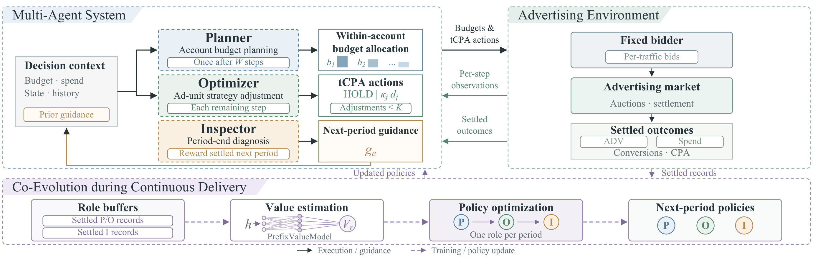
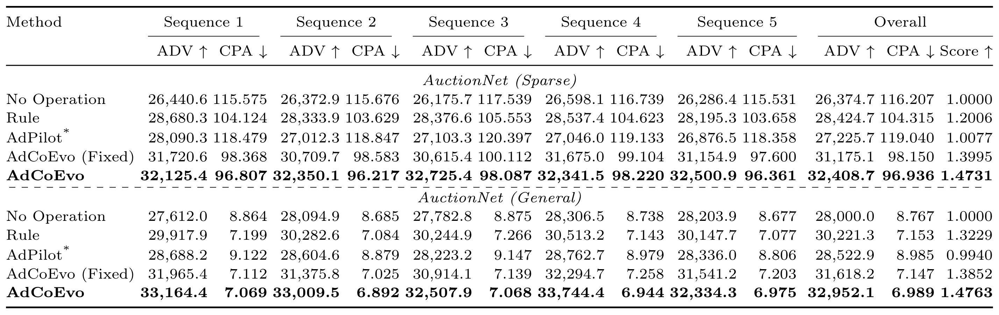
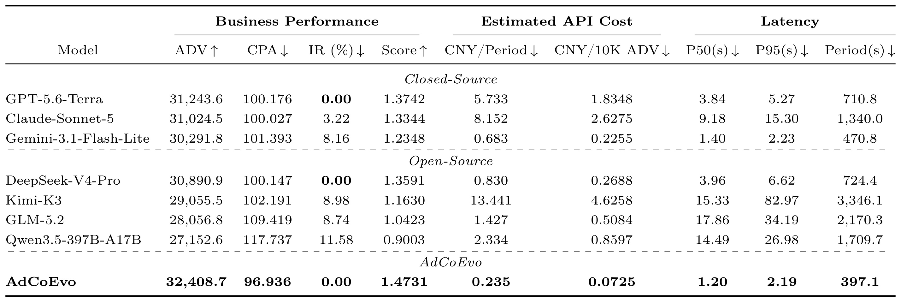
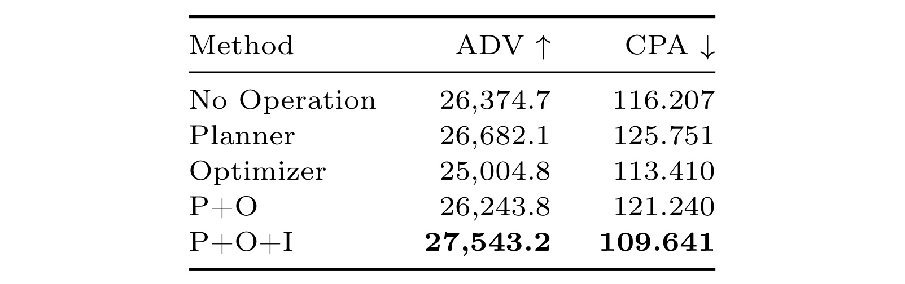
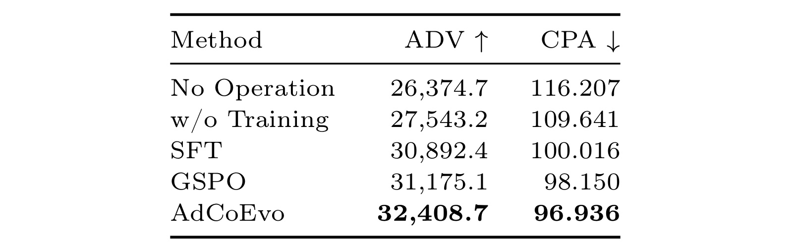
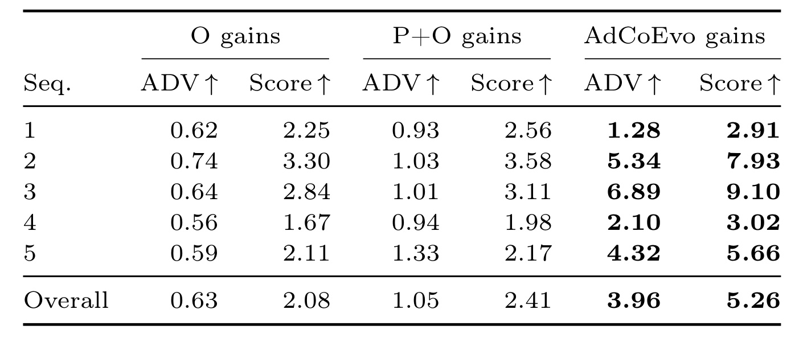
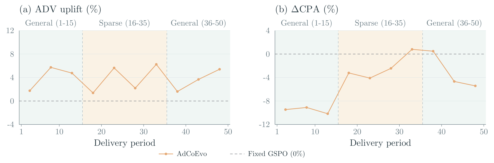

AdCoEvo：用结算反馈驱动广告运营多角色共同演化
- 论文：AdCoEvo: A Co-Evolving Multi-Agent Advertising Delivery System
- 作者：Tianzhu Hu、Hang Yu、Zeyuan Zhao、Zeyu Pan、Huan Luo、Chun Gan、Mingzhe Cao、Liubin Wang、Mingming Li、Jiao Dai、Jizhong Han、Songlin Hu。
- 机构：中国科学院信息工程研究所、中国科学院大学、悉尼大学、京东。
- 首次公开：2026-10-14；本笔记：2026-10-16。
- 论文入口：arXiv:2610.19454。
- 代码：jd-opensource/AdCoEvo，本轮核验官方仓库HTTP 200可访问，未运行代码或复现实验。
- 证据范围：完整20页原始PDF，包括主文、参考文献及附录A–D。全文实验均为AuctionNet模拟器，未报告真实线上AB实验。
论文要解决的问题是：预算规划和广告单元调节会持续影响后续投放，而期末诊断只有进入下一周期的规划与调节后才产生价值。若要把运营职责交给多个模型，训练信号也必须与每种决策的影响范围、反馈延迟和结算时机一致；与此同时，变化的广告市场又要求系统利用新反馈持续更新策略，而不能永远停留在固定的离线经验。
1. 背景和问题
从单次竞价走向运营决策
一套广告系统通常早已具备自动出价、预算约束和流量竞争机制，但这并不意味着运营过程已经自动化。账户里多个广告单元如何分预算、什么时候提高或降低目标转化成本、期末低效表现应归因于预算还是出价、第二个周期应该怎样修正，仍然是彼此关联的运营决策。论文关注的对象是这些较慢尺度的决策：底层竞价器保持固定，语言模型负责改变预算配置和控制用的目标转化成本。因而阅读结果时，不能把它理解成对逐曝光出价函数、转化率预估模型或排序网络的直接改造。它研究的是一个可以反复观察、执行、结算、学习的广告运营闭环。
人工运营的局限在此很具体。账户规模扩大时，人要读更多报表、判断更多异常、维护更多单元；同一规则在市场变化后可能不再合适；一个熟练运营者的经验，也未必能自然转成另一个账户可重用的策略。已有自动竞价或预算分配方法通常解决某一个环节，而端到端的运营协调仍可能落在人身上。论文将AdPilot作为接近的背景工作：先从当前指标和历史走势产生诊断，再生成操作，并通过后训练改进。AdCoEvo进一步把职责拆成三个政策独立的角色，让诊断、规划和调节各自接受与职责一致的训练反馈。
困难来自影响范围与时间不一致
预算规划决定一个账户剩余资金在多个单元间的分配，影响会延续到当期结束；调节一次目标转化成本也不会只影响当前瞬间，它会改变后续拿量、消耗和转化；诊断则更特殊，生成当下没有直接业务回报，必须观察下一期其他角色怎样利用它，才能评价是否有帮助。若给三个角色都贴上同一时刻、同一个账户的收益标签，诊断可能被错误奖励，调节动作的持续影响也会被截断。论文真正需要回答的是，如何让样本、奖励与行动的作用窗口对齐，而不仅是让几个模型轮流说话。
这些角色又不是互不影响的独立策略。Planner把钱分给某单元后，Optimizer面对的预算余量和可行行动随之变化；Optimizer改变投放节奏，会改变Inspector在期末看到的问题；Inspector提出的建议，下一期又进入规划与调节上下文。若全部角色同时学习，状态分布和对方行为都在改变，难以判断当前策略更新究竟改进了什么。AdCoEvo选择每个周期只更新一个角色，按规划、调节、诊断轮转，其他角色在该次更新中保持参数固定。它将这种跨周期相互改变训练反馈、再逐个适应的过程称为共同演化。
目标价值、成本与行动边界
论文把广告主价值记为ADV，使用环境给定的初始目标转化成本，为有效曝光的预测转化概率加权。这个定义尤其重要：ADV不是已经结算的商品利润、实际收入，也不是直接观测到的真实转化价值。模型虽然能够修改控制用的目标成本，但ADV的估值基准始终使用初始值，避免仅仅抬高控制目标就机械抬高指标。CPA则使用总消耗除以总转化，体现真实模拟转化数量对应的单位成本。二者共同评估运营效果，不能只挑价值增长而忽略成本恶化，也不能把降低出价导致的规模损失描述成全面进步。
符号解释：周期为 $e$，受控账户集合为 $\mathcal A$，账户内单元集合为 $\mathcal U_a$；$d_{a,j}$ 是环境给定的初始tCPA，$q_{e,a,j}$ 是有效曝光预测转化概率之和，$C_e$ 与 $N_e$ 是该范围总消耗与总转化。$\overline F_e$ 是账户平均价值；CPA仅在转化分母有效时有定义。
系统还受到两类硬边界。预算可以在同账户单元间重新分配，但不能凭空增加账户总预算；一个单元每个周期的有效目标成本调节次数不能超过上限。行动使用离散倍率而不是任意连续数值，并保留HOLD，即保持现有控制目标。预算分配失败或动作格式不合法时，执行层有确定的回退规则。它们使语言模型的自由文本输出能够进入有限操作接口，也提醒我们：指标提升包含模型决策与执行保护共同作用，不能把结果完全归给语言推理能力。
预算和成本目标之间也没有一个天然唯一的标量答案。论文的形式化问题并列最大化期望账户价值、最小化期望消耗与期望转化之比，代理奖励只是为了训练而选定的业务折中。对不同广告主，如果成本约束、规模目标或转化定义变化，原有权重不一定合适；即使相同参数在两个模拟环境有效，也不能当作跨业务通用最优配置。这个区别解释了为什么既要报告ADV和CPA，又要展示综合Score：单一分数便于比较，却不能代替两个原始业务维度及其约束。
为什么这篇论文值得看，也应怎样读
对推荐与广告研究而言，这项工作的价值在于把多个业务控制层级放进同一训练过程。很多排序研究着重于更准确的点击或转化预估，而生产系统还需要解决账户约束、阶段目标、历史反馈等问题。它展示了一种将语言模型放在较低频运营层的路径：让小规模领域模型学习读状态、选择有限行动、总结下一期建议，并通过显式结算逐步改善。这与逐请求毫秒级排序的计算预算完全不同，因此适合借鉴职责划分和反馈建模，而不适合直接照搬调用频率。
对大模型Agent研究而言，论文提供了一个比“任务成功率”更细的环境：多个账户、持续市场、预算竞争、成本与价值双目标、不同角色不同反馈延迟同时存在。优秀的说明文字不保证有业务价值，诊断也应通过后续执行效果评价。不过当前证据依然只覆盖模拟环境和指定任务。受控账户仅有三个，环境的转化概率由模拟器生成，未涉及真实线上预算风险、长时间转化回流或人工审批链路。本笔记因此把“方法机制清楚”和“能直接上线”分开判断：前者有完整算法与消融支撑，后者仍需独立验证。
2. 方法
2.1 角色分工与跨周期执行
Planner在观察 $W$ 个时间步后，每个账户调用一次，把剩余预算分配给账户内单元；Optimizer在之后每个决策步按账户调用，给四个单元分别输出HOLD或目标成本倍率；Inspector在周期结束后全局调用一次，综合所有受控账户的表现、预算利用率和执行历史生成下一周期指导。三个角色共享Qwen3-8B骨干设定，但各自保有独立LoRA政策。角色边界按行动粒度和反馈时机划分：Planner与Optimizer分别操作一个账户，Inspector观察全体账户。先观察再规划，能够利用当期市场信息，但观察过久也会压缩后续可调整时间。
符号解释：$B$ 为账户当期预算，$c_j^{\mathrm{pre}}$ 为规划前已消耗金额，$R$ 为剩余预算，$\alpha_j$ 为Planner给出的剩余预算占比，$b_j$ 是包含已消耗部分的单元总预算上限。$d_j$ 为初始tCPA，$\widehat d_j$ 为控制目标，$\kappa_j$ 来自有限倍率集合；HOLD或已达次数上限时保持旧控制目标。

图2上半部分从左到右连接决策上下文、三种角色、预算与目标成本动作、固定竞价器以及拍卖市场。观察箭头的方向，可以看到每步状态与已结算结果是不同的信息通路：Optimizer可以依据当前可见状态持续调整，而Inspector的建议沿着历史指导通路回到下一期的上下文。图中的“Reward settled next period”直接提示诊断不能在生成时就获得有效标签。中间的目标成本动作仍然进入固定竞价器，由竞价器形成逐流量出价；因此系统没有让语言模型逐曝光决定出价。这条层次关系使调用开销能够停留在账户决策尺度，也为读者理解预算规划与实际流量结果之间的间接联系提供了依据。
图2下半部分独立描绘训练通路。结算记录先进入各角色缓冲，再由输入前缀价值模型估计基线，最后每个周期只更新一个政策，更新后的政策参与下一期联合执行。这里的虚线不能等同于上半部分的执行箭头：一期里三个角色都参与业务，但训练阶段只轮到一个角色改变参数。规划和调节的当前期样本，与上一期诊断刚获得的后继期奖励，可以在同一次周期末进入对应缓冲，却仍按角色区分。这个设计把“如何执行一个周期”和“什么时候学习哪种能力”拆开，让角色变化通过下一轮市场交互传播，而不是在同一批数据上同时追逐一个不断移动的联合政策。缓冲区也不是把历史文本无限堆积进提示词：它保存可训练记录、行为政策概率与版本，已用于一次更新的记录移出，未轮到角色的已结算记录暂留。因此图中“下一期政策”与“下一期指导”承担不同作用，前者改变模型参数，后者改变模型输入，两条路径共同构成跨期适应。
2.2 影响范围与延迟奖励
Planner与Optimizer均使用价值和成本偏差构成的代理回报，但聚合范围不同。Planner评价观察结束到本周期结束的账户表现，Optimizer使用逐步增量，并在训练中累计后续回报。当前账户奖励还混合全体受控账户奖励，避免完全局部的改善伤害总体目标。Inspector以相邻周期总体反馈的改变量获得奖励，其反馈向量包含标准化ADV、转化、CPA约束裕量以及被迫HOLD率。论文附录给出归一化和权重定义；这些权重表达业务偏好，并不意味着一次诊断对下一期改善的因果贡献已被完全隔离。
符号解释：$F,C,N$ 为对应聚合范围的价值、消耗、转化；$\rho$ 是结算窗口内按转化数加权的初始tCPA均值，$\eta$ 控制成本偏差惩罚，$s$ 缩放奖励，$\omega$ 混合总体回报。$y_e$ 为标准化周期反馈向量，$w$ 是固定权重；$r_{e-1}^I$ 在周期 $e$ 结束后才结算。
尚未结算的诊断不能训练。例如周期一末生成建议后，要等周期二执行并结算，才能给周期一的Inspector记录贴奖励；周期二刚生成的诊断继续等待。这个移位消除了把未来反馈提前填入样本的时间错误，但并没有提供线上反事实：下一期市场随机性、Planner和Optimizer政策变化都可能影响反馈。离线训练时可以从同一快照分叉对比候选诊断；持续投放只沿一条真实执行轨迹前进，因此需要价值基线而不能继续假设每个状态有多分支标签。
2.3 示范学习与离线GSPO
离线阶段先通过SFT学习角色语义与结构化输出，再用环境回报优化政策。每个角色使用3290条DeepSeek V4 Flash生成的示范，Planner训练四轮、另两角色三轮；LoRA秩为16、缩放为32。强化阶段固定其他角色，从同一决策快照为目标角色采样四个候选并分别执行。Planner和Optimizer使用留一法优势，比较当前候选与同组其他候选的回报；Inspector额外跑一个不向规划和调节提供诊断的分支，用有诊断与无诊断的回报差衡量建议的增量价值。这种可分叉性来自模拟器，是离线训练的重要条件。
符号解释：$G$ 是每个快照候选数，$J_g^r$ 是角色 $r$ 的第 $g$ 个候选执行回报，$J_0$ 是无诊断分支回报。P/O优势随后按组内回报标准差的指数滑动平均尺度归一化；方差过小的候选组优势置零，Inspector保留相对无诊断基线的差。
符号解释：$L_g$ 为回答长度，$p_{g\ell}$ 与 $p^b_{g\ell}$ 为当前和采样政策对词元的条件概率，$\varrho_g$ 是按长度归一化的整序列比率；$I_r$ 为有效候选集合，$\widehat A_g$ 是已固定优势，$\epsilon_\pm$ 为裁剪边界，$\beta$ 控制相对固定参考政策的KL惩罚。
这就是论文采用的离线GSPO目标：同一完整回答共享决策优势，在序列比率层面裁剪，行为政策和参考政策在离线优化过程中固定。其配置为五轮、学习率十万分之一、裁剪区间零点八到一点二、KL系数零点一。优势归一化避免高波动快照主导梯度，但也意味着低方差组不再提供有效学习信号。不要把这里的KL惩罚原样抄到持续共同演化：后者改为词元选择和停止梯度的重要性权重，KL承担监控与回滚功能，而不直接进入演员目标。
2.4 单轨迹轮转与价值基线
持续投放中，每个决策只执行一个回答。每个角色维护PrefixValueModel，读取生成回答前最后一个输入词元的隐藏表征，经归一化、线性层、双曲正切和标量输出预测回报；输入特征断开梯度，不让价值回归改写语言模型。周期末所有新结算样本进入角色缓冲，只训练轮到的P、O或I，使用过的记录移出缓冲。每个角色第一次轮到时只训练价值模型，后续才更新演员政策。这样先建立当前业务回报的尺度，再决定这个动作比预期好还是差。
符号解释：$V_i^-$ 是本轮更新前的固定价值预测；$a,i$ 指同一账户中的决策节点，$\Delta_{a,i}$ 是到后继节点的环境步数，$b_{a,i}$ 是终止标记，$\gamma=1$，$\lambda=0.95$。Optimizer的GAE递推包含HOLD，且不跨账户、不跨周期；回归目标为优势加原价值预测。
符号解释：$h$ 为输入，$z$ 为长度 $L$ 的回答，$\widehat A$ 是该回答共享且本轮固定的动作优势；$\varrho_\ell$ 为当前与收集样本时行为政策的词元概率比，$m_\ell$ 选择有效词元，$\operatorname{sg}$ 表示停止梯度，$Z$ 为保留词元数，$Z=0$ 时跳过回答。
轮转更新并非无保护地追逐收益。价值模型以SmoothL1回归独立目标；演员每轮最多更新四次，每次重算概率比和掩码。若KL超过零点零一，或保留词元比例低于零点四，恢复该次演员更新前的参数及优化器状态，并停止本轮后续演员更新，但已完成的价值更新保留。这里需要保存优化器快照、重新计算概率、维护三套缓冲与政策版本，开销不能只用推理价格概括。重要性过滤也可能丢弃变化最大的回答，因此“有新样本”并不等于“全部样本都参与有效更新”。
3. 实验结果
3.1 环境、比较协议与指标
全文使用AuctionNet模拟器。环境有48个可以购买流量的广告单元，系统控制其中12个，组织成三个账户，每账户四个单元；底层统一使用Abid。每个投放周期有48个时间步，生成设置为五十万次流量机会。Sparse采用公开模拟环境；General依据公开General数据校准预测转化概率尺度、预算和CPA约束，其余拍卖机制不变。两者的绝对CPA明显不同，不能把两个环境的数值当成同一成本尺度下的行业对比。默认观察长度为12，有效调节上限为每单元每周期八次。
每种方法匹配使用五条独立市场序列，每条连续50周期；附录将第71到320号episode连续拆成五条序列。每条序列都从同一个离线GSPO检查点独立开始，序列内政策和诊断跨期继承；不同序列不串接学习。每期重新生成流量、预测转化概率及竞争者随机状态，但总流量、初始预算、约束、竞争者类型组成等总体配置固定。这提供了市场随机变化，也限定了变化范围。报告的总体CPA使用评价范围总消耗除以总转化，不应把各周期CPA简单平均替代这个口径。
符号解释：下标 $m$ 为所评方法，$0$ 为相同环境和预算下的No Operation；$\mathrm{IR}$ 是无效回答比例，在表中展示为百分数，在公式中使用小数。No Operation的Score为一。该分数同时奖励价值增长、成本下降并惩罚无效输出，不是可直接兑现的货币收益。
3.2 Sparse与General主结果分开读

表1最有用的对照是Rule、AdCoEvo Fixed与完整AdCoEvo三行。Sparse中，Rule的总体ADV为28424.7、CPA为104.315，完整系统为32408.7和96.936，因此得到论文摘要强调的ADV提高百分之十四点零二、CPA下降百分之七点零七。Fixed则是31175.1与98.150，完整系统在其上再提高价值百分之三点九六、降低成本百分之一点二四。前一个对照包含角色组织、领域训练和持续更新等全部变化，后一个才更直接隔离“保留相同离线能力后继续共同演化”的增量。把百分之十四点零二都归给共同演化会明显夸大机制贡献。
General部分应独立报告：Rule为30221.3和7.153，Fixed为31618.2和7.147，完整系统为32952.1和6.989。相对Fixed，论文给出价值提高百分之四点二二、CPA下降百分之二点二一；两个环境都支持持续更新有增量，但幅度不同。五条序列中完整系统的价值和成本均优于所列方法，说明结论不是只来自某一条最好序列。与此同时，表中没有给出置信区间或显著性检验，五条序列的总体平均也不能消除模拟器结构偏差。可接受的判断是“在指定模拟设置中表现一致”，不能推成真实业务任何市场变化下都稳健。
3.3 基础模型比较与开销口径

表2把相同角色流程和接口交给基础模型，比较业务、格式错误、API成本和延迟。AdCoEvo的ADV为32408.7、CPA为96.936、无效比例为零、Score为1.4731；表中总体最好的基础模型GPT-5.6-Terra是31243.6、100.176和1.3742。论文计算价值提高百分之三点七三、成本降低百分之三点二三。这支持领域后训练与反馈学习能补足通用模型的运营能力，而不能据此断言小模型在任意任务胜过大模型。基础模型没有接受同样的领域后训练，比较的是可用系统方案而非纯粹同数据同训练预算的模型架构竞争。
开销列也需要同时读。AdCoEvo每周期估计API成本零点二三五元，每万ADV零点零七二五元，调用延迟中位数一点二秒、九十五分位二点一九秒、整个周期三百九十七点一秒。价格按论文记录的二零二六年九月一日OpenRouter价目计算，并非当前报价；训练、价值回归、优化器保存、回滚与基础设施没有被API推理价完整涵盖。某些基础模型还出现百分之几到十余的格式无效比例；执行层会将错误动作回退为HOLD，预算失败则按初始比例分配，所以错误不仅影响Score，也会改变实际控制轨迹。上线估算应分别核算推理服务、持续训练与安全执行成本。
3.4 角色协同不是增加模型数量就有收益

表3刻意在没有领域后训练的前提下比较角色组合。No Operation的价值为26374.7、CPA为116.207；单独Planner略增价值到26682.1，却把CPA推到125.751；单独Optimizer将CPA降到113.410，但价值降为25004.8。P加O也没有自然融合两者优点，其价值26243.8、CPA121.240，仍不优于基线。加入Inspector之后达到27543.2与109.641，相对P加O价值提高百分之四点九五、成本下降百分之九点五七。这个结果支持跨周期指导对协调局部目标有帮助，尤其说明多个角色的局部改进不能简单线性相加。
解读时还必须注意角色删除的具体含义。不使用Optimizer时，所有动作保持HOLD且控制目标始终是初始值；不使用Planner时，各单元保持初始预算；没有Inspector时，P与O只收到当前期状态，没有跨周期诊断，也没有固定统计摘要替代。因此这张表同时改变功能和可用信息，不是“语言诊断优于同信息统计表示”的严格证据。论文另做固定统计摘要替换诊断的比较：Sparse中诊断提升价值百分之一点六一、CPA下降百分之一点五五；General分别为一点六四和一点三四。这个额外对照更接近检验诊断表达的作用，但也仍是整个系统后续执行效果的比较。
3.5 示范学习贡献最大，持续更新提供后续增量

表4保留完整角色，把训练阶段顺次加入。无领域训练时价值27543.2、CPA109.641；SFT后成为30892.4和100.016；离线GSPO后为31175.1和98.150；持续共同演化最终达到32408.7和96.936。示范学习在价值和成本上带来较大跨越，说明正确理解任务、组织有效输出并学会初始运营模式十分重要；离线强化进一步优化执行结果；持续更新则利用正式评估序列的新反馈获得额外收益。把论文概括成“只要加在线强化学习就能提升百分之十四”会遮蔽训练链条中最基础的领域能力建设。
这张表也解释Fixed的准确含义：它冻结的是离线GSPO之后的角色参数，而不是拿一个未经训练、没有Inspector的简化系统做比较。完整系统与Fixed都保留角色协作和诊断流程，差异是是否继续更新参数，因此这组对照最适合衡量共同演化的边际贡献。不过阶段递进同时增加数据利用和计算，没有与同等训练预算的替代算法完整匹配。论文能够说明这一训练组合有效，尚不足以唯一证明轮转机制在任何预算下最优。后续复现应保存各阶段检查点、数据范围和优化步数，防止把训练量差异误记为算法差异。
3.6 诊断角色参与学习，成本可能微升

表5所有设置保留完整P、O、I角色，仅改变谁参与持续更新。只更新Optimizer时，每周期更新O；更新P和O时两者交替；完整系统轮转P、O、I。相对Fixed，只更新O的总体ADV增幅为百分之零点六三、Score增幅百分之二点零八，更新P与O为一点零五和二点四一，完整系统为三点九六和五点二六。单独允许一个调节角色适应，不能替代整个协作过程适应。序列二、三的完整系统增量尤其大，说明收益受市场轨迹影响，而不是每个序列都固定增加同样比例。
正文还提供一个容易被摘要淹没的限制：相对P与O交替更新，完整共同演化价值再提高约百分之二点八八、Score提高约百分之二点七八，但CPA约上升百分之零点一。于是正确解释是近似成本水平下换得更多价值，而不是所有对照都同时降低CPA。表内展示的是相对Fixed的价值和综合分数增幅，本身没有CPA列；成本微升来自原文对应说明，应一起交付。另一个解释边界是更新次数匹配方式：三种设置每期都只更一个角色，但每个具体角色在固定50周期内获得的更新次数不同，Inspector参与会分走P/O更新机会，不能说各角色训练量完全相同。
3.7 市场切换显示价值优势与成本恢复不同步

图3先运行General十五期，第十六期切到Sparse，第三十六期再回General；曲线是五条序列在五周期窗口上的平均，虚线零点是Fixed GSPO。左侧价值相对增幅在两次切换后仍为正，但并不单调增长，切换附近有回落。右侧CPA变化更能揭示边界：初始General阶段成本明显低于Fixed，进入Sparse后降幅收窄，接近第二次切换时甚至略高于零；回到General后经过若干周期才重新获得较明显成本下降。由此只能说持续学习具有适应潜力，不能说市场改变时性能完全无损或立刻恢复。
五周期平滑也会隐藏短时风险。真实业务若关心单日超额消耗、成本约束违例、极端账户损失，平均曲线不能替代原始轨迹。图中没有误差带，无法判断某个点的序列间波动；实验还只在两个预定义环境间切换，未覆盖竞争者策略突变、预估失准、延迟转化或商品结构变化。这些都不是否定已有结果，而是说明将“模拟器中的持续适应”迁移到线上，需要增加分位数风险与恢复时间的评价。尤其当CPA可能暂时高于Fixed时，保护机制与业务约束比平均收益更值得先验证。
3.8 预算与参数敏感性补足适用范围
图4比较初始预算为原值百分之六十、八十和一百时的表现，三种预算下完整系统在所列方法中价值最高、CPA最低。预算降到百分之六十时，相对Fixed仍提高价值百分之七点一七、降低CPA百分之零点七八。这支持共同演化并不只在默认预算下有效，但不意味着任意稀缺程度都保持提升。预算减少还会改变可获得的转化反馈密度，若继续压缩到大量单元零转化，当前实验未给出外推依据。
表6完整敏感性数值为：观察六步时ADV29547.0、CPA97.742、Score1.3319；默认十二步为32408.7、96.936、1.4731；十八步为30649.6、107.914、1.2514。较长观察带来更多信息，却留给规划和调节更少时间，因此信息量并非越多越好。调节上限四次时为31992.6、97.240、1.4496；八次为默认值；十二次为31268.6、99.510、1.3845。放宽操作次数反而下降，说明频繁操作并不自然带来更好控制。两个敏感性实验共同提示：角色节奏、动作预算和反馈窗口必须匹配，不能只追求增加Agent调用次数。
4. 总结
AdCoEvo最值得保留的贡献，是把广告运营中不同职责的决策影响范围和反馈时机显式接入训练。它没有停在一个多角色提示词流程，而是依次给出账户规划、单元调节、全局诊断的执行接口，为规划和调节构建不同时间尺度的回报，让诊断等待下一期结算，再用单轨迹价值基线、角色缓冲和轮转更新完成持续学习。离线GSPO与持续更新各有适用数据条件：前者可以从快照反复分叉候选，后者只能从实际执行过的一条轨迹学习。这种条件差异，比简单记住算法名更有迁移价值。
对广告或推荐平台，可以借鉴的第一点是先定义控制接口再选择模型。把高频出价交给固定竞价器，把低频账户操作交给可约束的语言政策，可以减轻时延压力，但账户数增长后仍有调用数与上下文成本。第二点是为不同角色明确可观察状态、行动范围、奖励窗口和训练资格，尤其诊断与复盘类角色必须等建议被使用后再评价。第三点是把版本、结算、缓冲、有效词元过滤和回滚视为方法的一部分，不能只移植一个奖励公式。上述是从论文机制得到的工程启发，不是已经在线验证的收益承诺。
反过来，推荐与广告的经验也能约束通用Agent研究。业务目标通常既要求规模又要求成本，单一成功率会掩盖取舍；全局奖励可以改善局部贪心，但也加大归因难度；平均回报增长不等于每个账户风险可接受。对Inspector采用后继期差分奖励，虽然解决了时间对齐，仍混有市场变化和其他政策更新的影响。若后续要提高可信度，可以比较不同诊断在同市场快照下的反事实分支，或在固定其余政策时估计诊断增量，再检验这种离线信用分配能否转移到持续执行。这是值得继续做的研究问题，原文未提供完整答案。
当前结论有至少四条边界。首先，所有实验是AuctionNet模拟器，ADV基于初始目标成本加权预测转化，不能换写成真实广告收入。其次，三账户十二受控单元及五条五十周期序列远小于实际平台规模，复杂度公式没有覆盖持续训练与恢复成本。再次，主表没有置信区间或显著性检验，预算和市场变化范围有限。最后，完整轮转相对P/O更新可能略升CPA，因此“共同演化总能双目标同时改善”不成立。官方代码已可访问，但本轮只读论文、整理证据、核验图表，没有运行仓库或复现实验。
还应单独观察奖励规模与样本有效率。P/O的归一化、Inspector的差分、演员的词元过滤，都会改变实际学习强度；若某角色长期因低方差、未结算或回滚得不到更新，它在名义轮转中出现，并不等于能力真正持续改善。复现时记录每轮有效样本数、保留词元比例、回滚次数和各角色实际更新量，比只核对最终平均指标更能定位收益来源。
后续优先跟进三件事：一是检查代码中轨迹政策版本、诊断延迟结算和账户内GAE边界是否与附录一致；二是在更多账户、不同反馈延迟及更剧烈市场变化下记录原始周期曲线、最坏成本和恢复时间；三是做训练与推理全成本匹配，比较轮转、固定政策以及同预算其他更新方案。只有把收益、稳定性和计算成本放在同一账本，才能判断这套多角色共同演化在具体广告链路中是否值得引入。